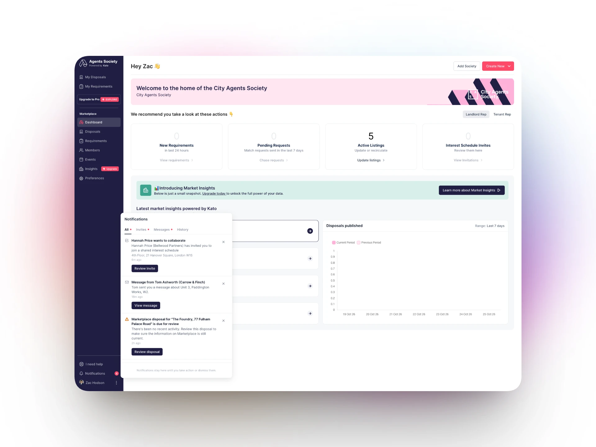
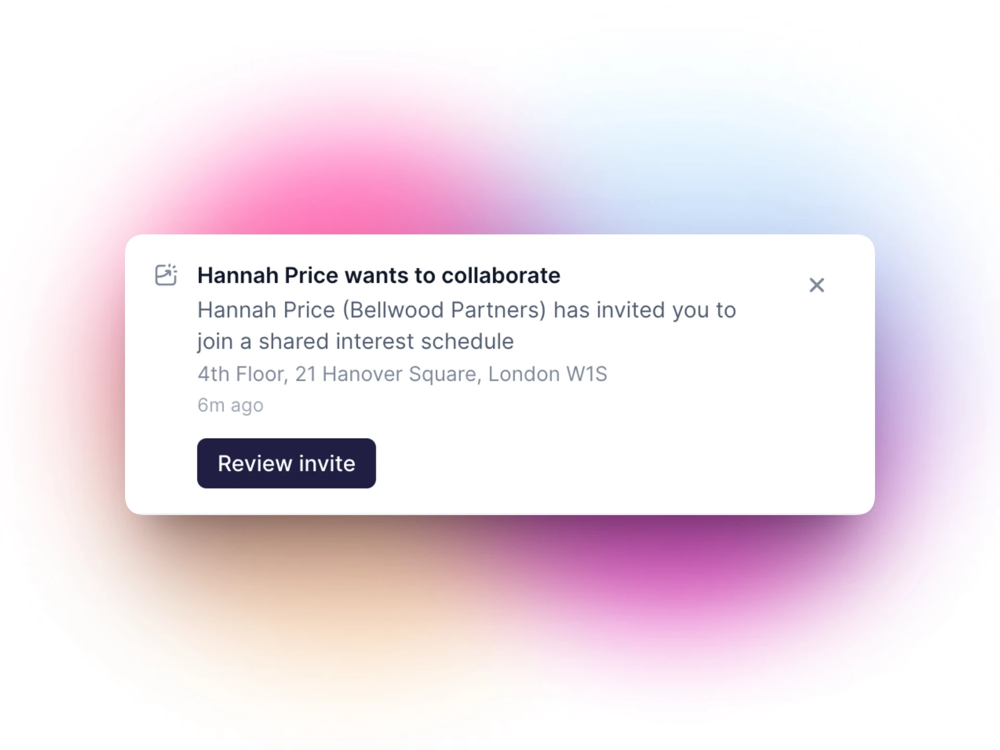
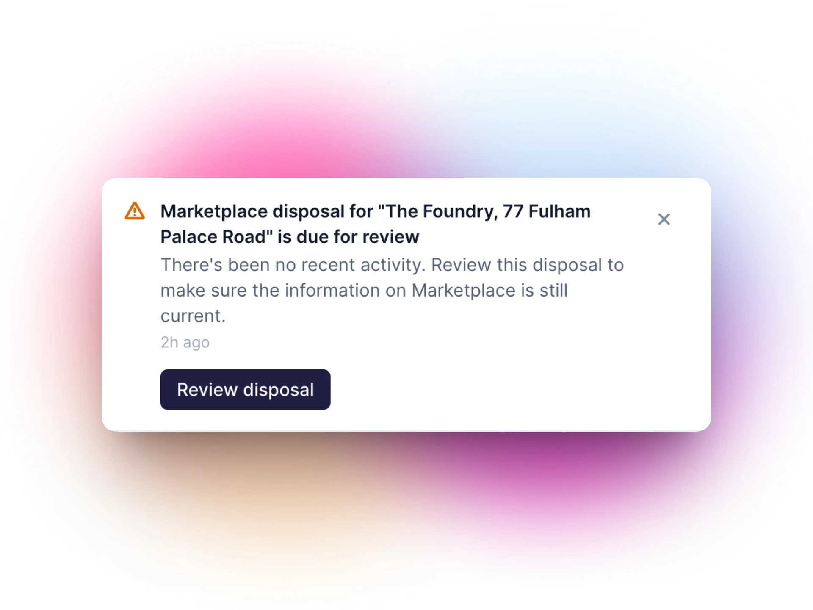
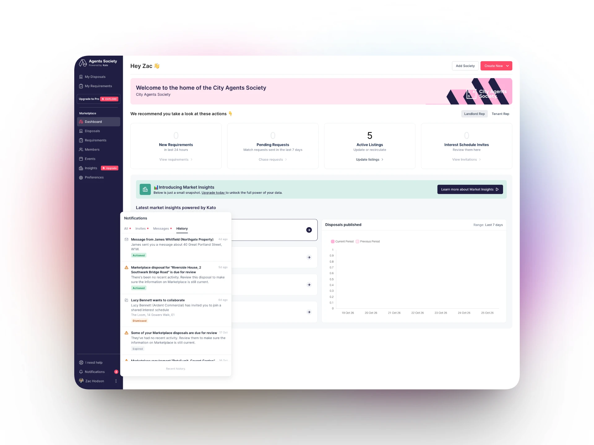
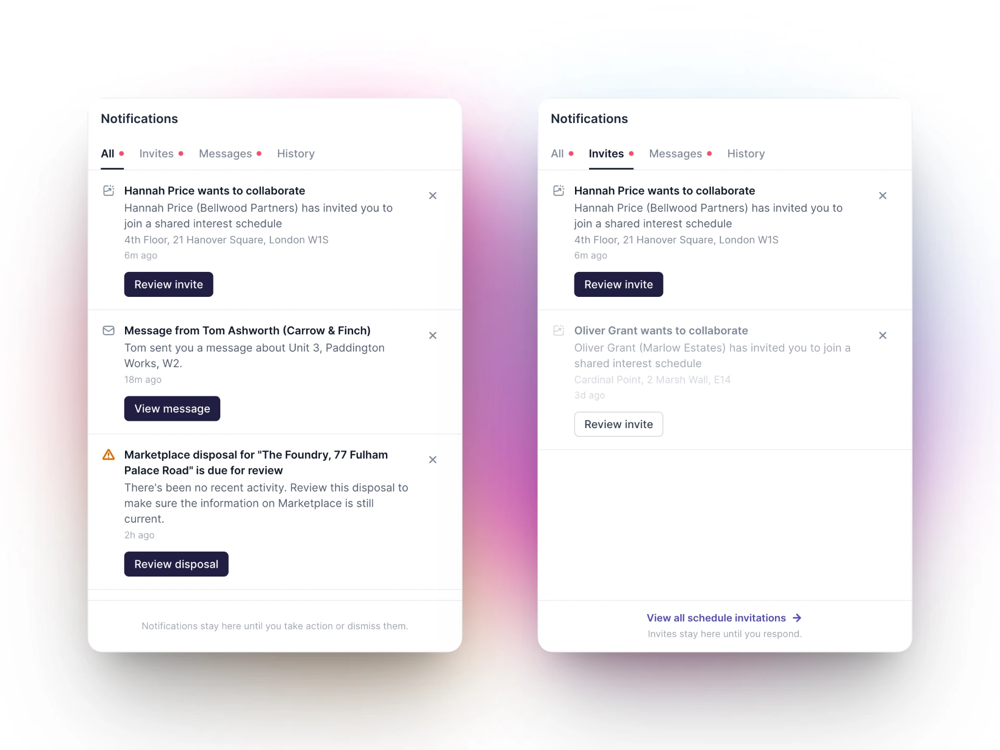
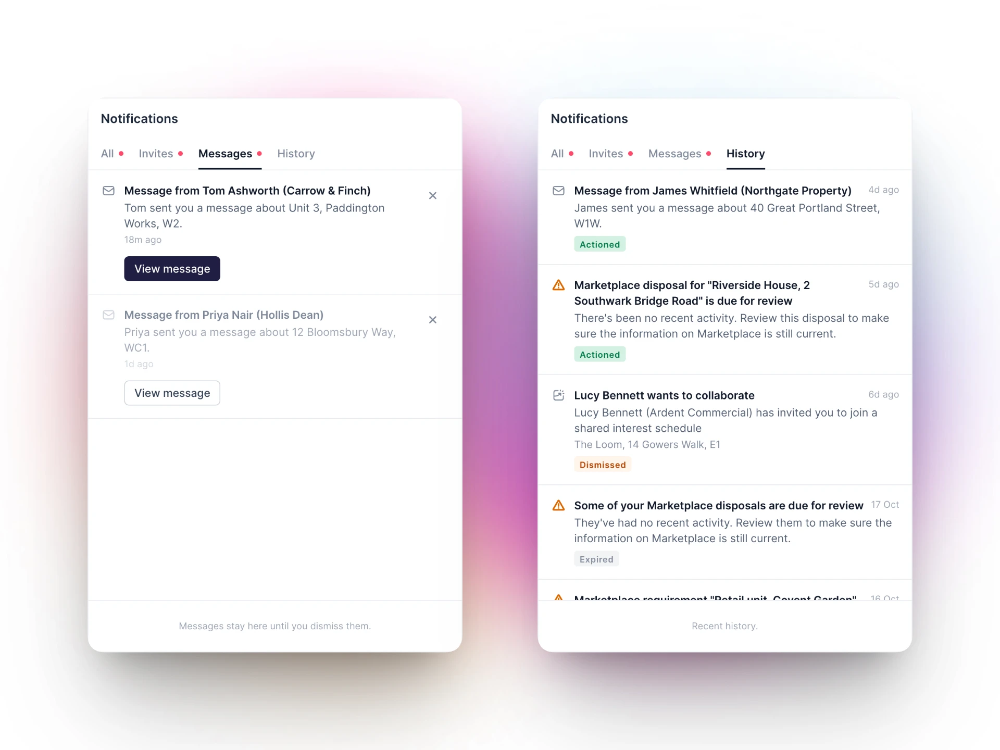

Kato 2026 case study
One place for everything that needs your attention
In-app notifications for Kato's agency app, taken from first exploration to a shipped notification centre. I product managed, designed and built it.

Background
Agents using Kato need to know when something changes: a listing is going stale, someone sends a schedule invite, a message arrives, or a colleague mentions them in a comment. Before this work, the app had no single place to see those moments.
This was the first project where I owned all three sides: deciding what to build and in what order, designing it, and shipping the front-end.
The problem
Important updates were easy to miss:
- No notification centre in the agency app, so updates relied on emails and on users checking each page
- Listings going stale needed action, but nothing in the product prompted agents to act
- Invites, messages and @mentions had no in-app signal at all
- Two front-ends, a newer React app and older AngularJS pages, meant any solution had to work across both
Product
01Scoping an MVP that could ship
I started from two prototypes, one with the interface and one with the real API, and wrote a design doc that merged them into a single MVP. It set a tight scope: a bell, a panel of the user's notifications, unread states, mark as read, and a click-through to the right page. Real-time push, preferences and a full notifications page were deliberately left for later.
Ship one complete, working notification end to end, then add notification types one at a time.
02Rolling it out safely
Each notification type sits behind its own feature flag, so new types could go live one at a time, to chosen organisations first, without risking the rest.
- Listing alerts: stale, 48 hour and unpublished listings, grouped per stage
- Schedule invites, with a backfill so existing invites appeared on launch
- Messages, skipped while you're already viewing the thread
- @mentions in comments across interest schedules, requirements, shortlists and viewings


Design
03Where the bell lives
The app had no top bar, so placement was a real decision. I built both candidate positions behind a toggle, top right of the page and in the left navigation, so we could compare them in the product rather than in static mocks. The bell settled in the left navigation.

04A panel built around actions
Some notifications just inform you, others need you to do something. The panel uses a two-state model that separates read from actioned, so a notification only clears when it's genuinely dealt with.
- Tabs for invites, messages and history, with unread dots rather than counts
- Dismiss only on informational rows; completed rows tinted with the success colour
- Titles clamped to two lines with a tooltip, and copy tightened with a UI copy review
- Each notification opens the exact record, often straight into its drawer


05Noticeable, even in another tab
Agents often keep Kato open in the background. Unread notifications now show in the browser tab: a red dot on the favicon and the unread count in the page title.
Build
06Shipping the front-end
I built the notification centre in React on the Kato design system, wired to the existing Laravel notifications API, with an adapter that turns each raw notification into a consistent row with the right link.
- One shared bell component, also embedded in the older AngularJS navigation so every page has it
- Component tests for the panel states
- Built with AI-assisted development, reviewed and shipped through the normal release process
Outcome
A notification centre that's live across the agency app, built so new notification types can be added and rolled out one at a time.
- Product managed, designed and built from first exploration to release
- Listing alerts, invites, messages and @mentions in one place
- Safe, gradual rollout with a feature flag per notification type
- Launched in October 2026, with usage results to follow
Learnings
- A tight MVP that works end to end beats a broad one that doesn't ship
- Testing placement in the real product settled the debate faster than mockups
- Separating read from actioned keeps the panel honest about what still needs doing